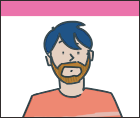

:: Sitio web de Roberto Gutiérrez durante mi etapa como diseñador gráfico en Kale Dor Kayiko
"Soy diseñador gráfico. Durante aproximadamente 6 años trabajé en Kale Dor Kayiko". En esta etapa creé esta web.
Roberto Gutiérrez
"¿Cómo se llama...
'ese payo que dibuja'?...
Un día estabamos en la oficina y la mujer de uno de mis compañeros de trabajo me dijo:
—"Sabes, Rober..., cuando no me acuerdo de tu nombre... le pregunto a mi marido:
'¿Cómo se llama... ese payo que dibuja?'"...
;) Gracias, Victoria
Bilbao. País Vasco.  Más información: Wikipedia/Bilbao.
Más información: Wikipedia/Bilbao.
Fotografías: Arriba: Obra de Daniel Buren situada sobre el propio puente La Salve - Museo Gugghenhein Bilbao. Fotografía original: Flickr - josu.orbe. Derecha: Obra de Daniel Buren "modificada" con Photoshop para este sitio web.
Diseño
gráfico
 Y ¿qué es Kale Dor Kayiko?
Y ¿qué es Kale Dor Kayiko?
Kale Dor Kayiko es una asociación educativa gitana que desde 1989 trabaja por ayudar a que los niños y niñas gitanas superen las diferentes etapas educativas con éxito.
 Más información: Sitio web de Kale dor Kayiko...
Más información: Sitio web de Kale dor Kayiko...En mi puesto de trabajo en Kale Dor Kayiko.
- Asociación: Kale Dor Kayiko.
Bilbao.
Bizkaia.
Mi mesa de trabajo en
Kale Dor Kayiko.
El carromato gitano lo compré en una tienda de juguetes de Bilbao. Lo restauré. No estaba a la venta. Estaba en el escaparate y estaba un poco deteriorado...
::/ Experiencia laboral:
Actualmente:
|  | Visita la web de mi nuevo proyecto: Los micormachismos de Luis Bonino... |
2008 - 2013: Diseñador gráfico en Kale Dor Kayiko
Desde el 2008, si bien no siempre de forma continuada, diseñador gráfico de Kale Dor Kayiko
2005: E-learning en Redox
Diseñador gráfico en la empresa de e-Learning Redox de Las Arenas (Bilbao), realizando ilustraciones y animaciones en Flash para proyectos educativos on-line.
- Curso de Patrón de Embarcaciones de Recreo (PER)
- La negociación como creación de valor. Consultores - DTI
 2004: E-learning en Artevía
2004: E-learning en Artevía
Diseñador gráfico en la empresa Artevía de Balmaseda participando en la realización de cursos de e-Learning.
2001 - 2003: Diseñador gráfico y web en Arco Comunicaciones
Diseño gráfico y web en la empresa de Bilbao: Arco Comunicaciones.
NOTA: Arco Comunicaciones cerró en el año 2004.
Carteles
Retoque digital
Animación
Flash / Banner
Diseño web
Calendarios
Chapas
Cuadernos
Marcadores
de páginas
Loader / Semáforo
Ilustración editorial
Ilustración publicitaria
Ilustración técnica
Intro-web / flash
Diseño web
Diseño web
¿Ilustrador, diseñador gráfico, web? Pero entonces, ¿yo qué soy?...  Seguir leyendo...
Seguir leyendo...

Roberto Gutiérrez:
¿Quién soy?
Breve descripción en 8 o 10 líneas...
;)
Folleto realizado sobre mí mismo para una exposición colectiva junto a Artistas Crónicos.
::/ El Alter ego de el 'Payo que dibuja':
- "¿Es un pájaro, un avión... una hipoteca subprime?"...
 Y entonces... ¿Quién es?:
Y entonces... ¿Quién es?:
El Capitán Rom: El héroe que se echaba en falta...
¿Cómo surge el 'rumor' de que el Diseñador gráfico de Kale Dor Kayiko es, en realidad, el Capitán Rom?
Básicamente lo que ocurrió es que se vió en los carnavales de Bilbao de 2010 al Capitán Rom en un restaurante del Casco Viejo.
Curiosamente en ese momento estaba allí la plantilla de Kale Dor Kayiko. Al verse al Capitán Rom justo en un momento en el que nadie supo decir dónde estaba el diseñador gráfico, se llegó a la disparatada suposición de que el diseñador gráfico de Kale Dor Kayiko y el Capitán Rom eran el mismo.
¿Pero puede...
un humilde diseñador gráfico, ser, realmente, un super héroe?...
Arriba: fotografía del Capitán Rom en un restaurante del Casco Viejo de Bilbao.
NOTA: De momento el Capitán Rom no oculta su identidad con ninguna máscara ni antifaz. Así que he puesto una fotografía del gran Christopher Reeves para, tanto si el Capitán Rom es el diseñador gráfico de Kale Dor Kayiko, como si es cualquier otro, proteger su identidad secreta.
¿Es realmente posible que éste sencillo diseñador gráfico sea, en realidad el "Capitán Rom"?... (!)
Antecedentes: Clark Kent
No sería la primera vez, ya antes el mítico héroe 'Superman', se ocultaba tras una identidad secreta aparentemente también inverosimil: Clark Kent, un tímido reportero del diario Daily Planet de Metrópolis.
NOTA (Fotografía - abajo): "Hermion" Gurrutxaga. Autora de la única fotografía del Capitán Rom que existe.
Diseño gráfico, diseño web, ilustración, e-learning?... ¿Qué es lo que yo soy... a qué me dedico exactamente...?
Pero entonces: ¿ilustrador, diseñador gráfico, diseñador web?...
Yo en realidad lo que siempre quise ser es redactor publicitario. De hecho, era lo que quería ser cuando empecé. No lo conseguí: Se ve que mis textos eran demasiado largos, poco claros, nada directos...
Pero a mí desde luego lo que me gustaba y lo que me gusta es la publicidad. Siempre creí que terminaría trabajando en una agencia de Publicidad.
La ilustración nunca me interesó demasiado. O no al principio, la verdad. Aprendí lo que sé de dibujo por si eso me llevaba a trabajar en lo que realmente me gustaba. Cuando empecé a ir a clases de dibujo aquello parecía imposible; hoy ya no lo es tanto.
Aprendí lo que sé de diseño gráfico y web para sobrevivir.
Sigo sin trabajar en una agencia de Publicidad; igual es mejor así, no lo sé...
Derecha: Uno de los primeros anuncios que escribí. Peluquería Marta. Durango.
::/ Formación académica (Dibujo y pintura):
Escuela de Dibujo del Museo de Reproducciones Artísticas de Bilbao.
c/ Conde Mirasol, 8. Bilbao. Bizkaia (Foto: Google Maps).
Escuela de Dibujo del Museo de Reproducciones Artísticas de Bilbao
- 1994 - 2001.
Curso de Dibujos Animados en el Estudio de Animación de Bilbao Merlín.
- 550h.
Escuela de Dibujo Arrieta de Bilbao
- 1992 - 2002.